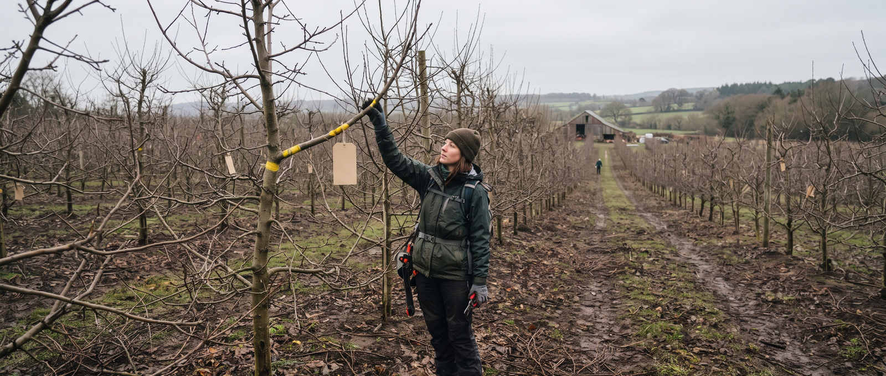

The Pruning Round. A command line suggester that walks a YAML configuration file against a security baseline written as a JSON Schema, and marks every property path where the configuration fails, at the exact spot where it fails.
One branch, marked at the spot. Each failing path gets its own report item.
InputA system configuration file (YAML) and a security baseline written as a JSON Schema
ReportOne item at every failing property path, carrying the schema error message
Where the baseline carries themA recommendation and a severity level at that path
Librariespyyaml for configuration parsing and jsonschema for validation
Parameters
The parameter list documents only these two:
Option
What the README records
-h
Show help message and exit.
-v
Enable verbose logging.
The usage line names neither the configuration file nor the baseline schema, although those two files are the tool's entire input.

The whole row, checked branch by branch.
Stated limits
Every validation failure becomes one report item at the failing property path, carrying the schema error message and, where the baseline carries them at that path, a recommendation and a severity level.
Where the baseline carries nothing for a path, the report shows a default note that no specific recommendation is available and a Medium severity. No specific recommendation is promised where the baseline carries none.
The run exits nonzero when the config fails validation, and prints the no issues line only when the config passes.